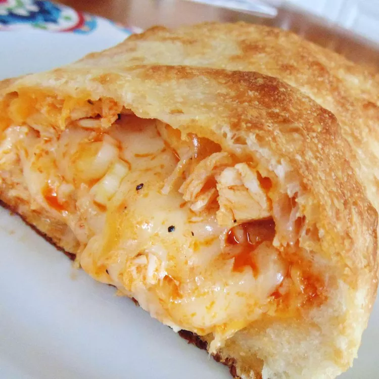

Buffalo Chicken Calzone
Esta receita de calzone de frango Buffalo é saborosa e muito fácil de fazer.
Ótimo para fatiar para uma festa ou futebol de domingo.
Sirva com molho de queijo azul para molhar o molho.

Calzone
Ingredientes
- 1 quilo de metades de peito de frango sem pele e desossadas
- 2 colheres de sopa de manteiga
- ¼ xícara de molho de asa de búfalo
- 1 massa de pizza refrigerada
- 2 colheres de sopa de óleo vegetal, dividida
- 2 xícaras de queijo mussarela ralado
Instruções
-
Pré-aqueça o forno a 410 graus F (210 graus C). Unte uma forma de pizza de 30 centímetros.
-
Coloque o frango em uma panela grande e cubra com água e sal; leve para ferver.
Cozinhe o frango em água fervente até que o centro não fique
mais rosado e o suco escorra claro, cerca de 15 minutos.
Um termômetro de leitura instantânea inserido no centro deve indicar
pelo menos 165 graus F (74 graus C).
Transfira o frango para uma tigela e desfie com dois garfos.
-
Derreta a manteiga em uma frigideira em fogo médio-alto.
Cozinhe e mexa o frango desfiado e o molho de asa de búfalo
na manteiga quente até que o frango esteja revestido e aquecido por 2 a 4 minutos.
-
Vire a massa da pizza sobre uma superfície generosamente enfarinhada.
Abra a massa em um círculo de 30 centímetros.
Pincele a massa com 1 colher de sopa de óleo e
polvilhe com 1 xícara de queijo mussarela, deixando uma borda de 2,5 cm.
Espalhe a mistura de frango sobre o queijo; cubra com 1 xícara de queijo restante.
-
Dobre a massa da pizza ao meio e aperte as bordas para selar.
Transfira o calzone para a assadeira preparada e pincele o
topo com 1 colher de sopa de óleo restante.
-
Asse no forno pré-aquecido até a crosta dourar, 17 a 20 minutos.